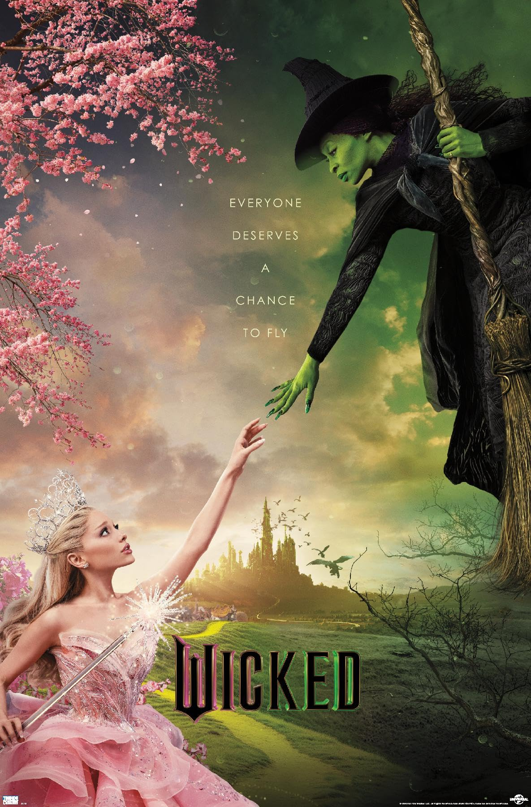

Wicked
Director: Jon M. Chu • Year: 2024 • Genre: Musical / Fantasy • Runtime: 2h 40m
Wicked surprised me more than I expected. It’s too damn long and leans hard on CGI and drama — but buried inside all of that is a genuinely entertaining story. Strong performances, catchy music, and a duo that works better than it has any right to kept pulling me back in, even when the movie didn’t know when to stop.
Review
Going into Wicked, I didn’t have high expectations. I knew I was getting an origin story for the Wicked Witch of the West, and honestly, I was ready for it.
The movie opens with Elphaba’s conception and birth, which is already wild. Her birth is played almost comedically, especially considering she’s treated like the big shock — not the nursing bear or the talking wolf doctor delivering her. I’m not used to talking animals, but apparently in this world that’s normal, so being green is where everyone draws the line.
Elphaba, played by Cynthia Erivo, is born from an affair her mother had. Her skin is green, and we don’t know why at this point — we’ll have to wait until Part Two for that. Because of her skin color, she’s been treated differently her entire life. She’s constantly trying to prove that it has nothing to do with who she is as a person.
Glinda, played by Ariana Grande, is the complete opposite. She’s a spoiled rich girl who’s been handed everything because of her looks and family status. She’s privileged, bubbly, pink, and used to getting her way.
From the moment you meet them both, you know they’re destined to be a duo — it just takes them a while to figure that out themselves. Elphaba is the brains. Glinda is the cute, pink, bubbly, lovable dingbat — no brains, but a big heart. They learn from each other, even though they fight it at first.
Visually, this movie leans hard on CGI and green screen. Honestly, I doubt this production ever left the studio. I’m okay with that, even though CGI never really ages well. Where the movie shines is in the close-ups and medium shots — close enough to feel the emotion, but far enough back to breathe. Those shots really put you inside the emotional turmoil of the characters.
I was surprised by how many static shots were used. I expected a lot more movement, but the stillness actually helped ground the emotional moments when they needed to hit.
Lighting and color were another surprise. The colors aren’t overly vibrant — they’re more neutral, but still rich. The pinks and greens play off each other really well, visually reinforcing how Glinda and Elphaba are two clashing forces meant to shake things up.
Beneath the fantasy, the movie is saying something simple: just because someone’s life looks easy doesn’t mean it is. Everyone has their own struggles, even if they don’t look like yours.
“Oh Sh*t” Moment
My biggest “oh sh*t” moment is when the school sneaks out for a night on the town. Elphaba shows up wearing a hat Glinda gave her — a hat Glinda gave her because she didn’t like her. It was a setup for failure.
When Elphaba walks in, it’s clear the hat is awful. The entire school makes fun of her. Then, in complete silence, she starts dancing alone. No music. Just her. Everyone watching.
The prince looks at Glinda and says, “I’ll say this much — she doesn’t give a twig what anyone thinks.” Glinda responds, “Of course she does. She just pretends not to.”
That line hit hard. There was a lot of weight and truth to it. I immediately thought, damn, Glinda… you’re not a dumbass after all.
Pacing, Music, and Sound
Now let’s talk about the biggest problem: pacing.
This movie is way too damn long. Almost everything at the school could have been trimmed. There’s too much time spent on things that don’t matter in the grand scheme. By the time the movie ends, you’re exhausted. It’s packed with drama that just didn’t need to be there.
The pacing is easily the film’s biggest downfall.
The music, though, works. The soundtrack is catchy, with “Popular” being my favorite song. Everything felt well placed. The sound design was solid and balanced.
Verdict
Final Thoughts
I didn’t go into this movie with high expectations — especially with all the hype surrounding it. One thing I really didn’t like was how heavy-handed the film felt at times with racial and social issues. When this movie came out, social media and the news were already flooded with discussions about discrimination and skin color, and honestly, I’m exhausted by it. I watch movies to escape reality, not to have it constantly thrown back at me.
That said, the film hits those themes hardest at the beginning and then backs off, and I appreciated that.
Cynthia Erivo — off screen — is not my cup of tea. I’ve seen her interviews, and I just don’t vibe with her at all. But in this movie, she was phenomenal. She played Elphaba incredibly well, and her vocal range during the singing moments was fantastic.
Ariana Grande was my favorite part of the entire film. She was hilarious. Cute, adorable, and dumb in the best way. Her comedic timing was always on point. She cracked me up nonstop.
My favorite scene is when she and Elphaba finally realize they don’t need to hate each other — the moment where “Popular” kicks in. That whole scene is gold. Ariana Grande deserves ten stars just for that scene alone.
Now, still talking about favorite scenes — let’s talk about the dance. When Elphaba is out there dancing in silence, it’s awkward. Not because of the silence — because of the choreography. There’s this move that straight-up looks like a one-winged chicken dance. I could not stop laughing.
I know the scene is meant to be about bravery — about being okay with being alone and being yourself — but that doesn’t mean the dance wasn’t hilarious and absolutely ridiculous looking. Then Glinda joins in, which somehow makes it even funnier. It does make sense that Glinda would dance like that, though.
And honestly, this is one of the film’s strengths. I love musicals for this reason — choreography. I’ve always loved the idea of everyone breaking out into song and dance over a cheeseburger just because life is perfect. I don’t want to be the star — I can’t dance or sing — I’ll be the guy doing the bare minimum in the background.
The choreography in this film is great overall — just not the awkward chicken dance. The cast moves smoothly, in sync with the music, and they don’t miss a beat. I was genuinely impressed.
One casting choice I didn’t like was Jeff Goldblum. I’ve never liked him as an actor. He plays the same guy in every movie, and I don’t feel like he has much range. Outside of The Fly and Jurassic Park — which I didn’t even love him in — he’s just not my thing, and he didn’t win me over here either.
I will say I do like that The Wizard of Oz is the mastermind in this. He’s the one that sees what is needed to make Oz a more functioning place. They all need a common enemy, and what better than an evil green witch. Which is true. People seem to come together when they all have the same thing to hate. I guess hate really can bring people together.
Overall, I didn’t expect to enjoy Wicked as much as I did. It’s not perfect. It’s way too long — I mean way too damn long — and I really hope Part Two tightens things up. At least make sense of all the extra characters that we spent so much time on that seemed pointless in the end.
What Worked
- Ariana Grande as comedic relief
- Catchy, memorable music
- Strong color contrast between pinks and greens
What Didn’t
- Extremely long runtime
- Slow pacing
- Too much unnecessary drama
- Heavy-handed political messaging
Audience Feedback
I’d love to hear your feedback and thoughts on the film. Email me at daniel@nobodycritics.com.